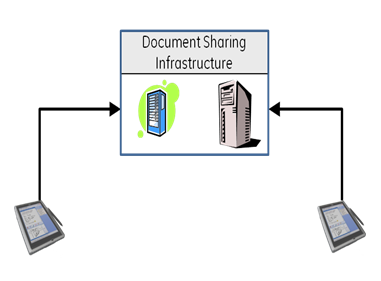

4.0.0-comment - ballot
4.0.0-comment - ballot
This page is part of the IHE Mobile Access to Health Documents (v4.0.0-comment: Publication Ballot 2) based on FHIR R4. The current version which supercedes this version is 4.2.0. For a full list of available versions, see the Directory of published versions 
The Mobile access to Health Documents (MHD) Profile defines one standardized interface to health document sharing (a.k.a. an Application Programming Interface (API)) for use by mobile devices so that deployment of mobile applications is more consistent and reusable. The transactions defined here leverage the document content- and format-agnostic metadata concepts that were initially developed for XDS but simplify them for access in constrained environments including mobile devices. The following figure is a high-level view of using MHD with a document sharing environment.

Figure 33-1: General MHD Diagram
The MHD Profile can be used as an API to a Document Sharing exchange using XDS or XCA. The MHD Profile is used by the MHDS Document Sharing solution. The MHD Profile can be used in push solutions alone or as an API to solutions like XDR or XDM. These are further elaborated in Cross Profile Considerations
This is a Draft for Public Comment IHE publication.
Applications specific to resource-constrained and mobile devices are an emerging platform for healthcare-enhancing software. The MHD Profile is not limited to mobile devices, using the term “mobile” only as a grouping for mobile applications, mobile devices or any other systems that are resource and platform-constrained. These constraints may drive the implementer to use simpler network interface technology. There are numerous deployed implementations of Document Sharing Health Information Exchange that need a simpler network interface technology, for example those hosted by a Health Information Exchange (HIE), large health provider electronic health record (EHR), or personal health record (PHR).
The Mobile access to Health Documents (MHD) Profile defines one standardized interface to health documents (a.k.a. an Application Programming Interface (API)) for use by mobile devices so that deployment of mobile applications is more consistent and reusable. In this context, mobile devices include tablets, smart-phones, and embedded devices including home-health devices. This profile is also applicable to more capable systems where needs are simple, such as pulling the latest summary for display. The critical aspects of the “mobile device” are that it is resource-constrained, has a simple programming environment (e.g., JSON, JavaScript), simple protocol stack (e.g., HTTP), and simple display functionality (e.g., HTML browser). The goal is, in part, to avoid burdening the client with additional libraries such as those that are necessary to process SOAP, WSSE, MIME-Multipart, MTOM/XOP, ebRIM, and multi-depth XML.
The Mobile access to Health Documents (MHD) Profile defines one pair of actors and a transaction to submit or push new “document entries” from the mobile device to a receiving system. Another set of actors and transactions is used to query a list of “document entries” having specific metadata, and to retrieve a document.
This profile leverages the metadata concepts from XDS but simplifies the transaction requirements for access by mobile devices and applications wanting to use the FHIR based API.
The MHD Profile does not replace XDS. Rather, it enables simplified access by mobile devices to an XDS (or a similar) document management environment containing health information.
The Mobile Cross-Enterprise Document Data Element Extraction (mXDE) Profile combines MHD with the PCC Query for Existing Data for Mobile (QEDm) Profile to provide element level access to the medical information available in a Document Sharing exchange. More details can be found in the white paper on Document Sharing Health Information Exchange.
Actors
Transactions
The MHD Profile enables sharing of patient documents to, or from, mobile or constrained devices. Other IHE profiles, chiefly Cross-Enterprise Document Sharing (XDS), describe sharing of patient document in less constrained environments, and many of the concepts from those profiles are applicable to the MHD environment. For more information on IHE Document Sharing, see Health Information Exchange: Enabling Document Sharing Using IHE Profiles White Paper.
The MHD Profile supports a broad set of the XDS use cases and functionality while keeping the implementation as simple as possible. The MHD Profile is focused on a subset of the use cases that XDS supports and does not try to reproduce the full scalability, flexibility, privacy, or security supported by a more robust XDS infrastructure. Example use cases are:
These specific use cases can be generalized into two broad use cases. The first is the general use case of publishing new document(s) from the mobile device. The second general use case is where the mobile device needs to discover available documents and retrieve documents of interest. There are clearly complex use cases that combine these two general use cases; however, they are not specifically described in this profile. When more complex use cases are encountered, use of one of the more robust Document Sharing profiles is more appropriate.
In this use case, a new document or set of documents is published from the mobile device. For example, a mobile device is a medical device that is submitting new health measurements, or a mobile device has a user-interface used to capture user input such as a Patient Consent. This device-created content is formed by the application, implementing the MHD Document Source, into a Document and submitted with the metadata.
This use case presumes that the mobile device knows or discovers the patient identity. The patient identity might be obtained through some IHE transactional method such as the Patient Demographics Query for Mobile PDQm or Patient Identifier Cross-Reference for Mobile PIXm Profile. The patient id might simply be entered via some device interface (RFID, Bar-Code), a user interface, or be specified in a configuration setting (e.g., mobile PHR application). The use case also allows for identity cross-referencing to be implemented by the Document Recipient.
This use case presumes that the sending mobile device knows the location of the receiving URL endpoints, likely through a configuration setting, or through a workflow driven by a web interface.
The publication of a new document(s) is done using the Provide Document Bundle ITI-65 transaction, which carries both the document and its metadata. This transaction is analogous to an XDS Provide and Register Document Set-b ITI-41 transaction.
Figure 33.4.2.2-1: Use Case 1 Process Flow
In this use case, the mobile device needs access to existing documents. For example, a mobile device involved in a workflow needs to determine the current state of the workflow, or the mobile device needs to discover the most current medical summary.
The Find Document References ITI-67 transaction is used to issue parameterized queries that result in a list of DocumentReference Resources, where a DocumentReference Resource carries the XDS DocumentEntry metadata, which is metadata about a document.
Alternatively, the Find Document Lists ITI-66 transaction is used to issue parameterized queries that result in a set of List Resources, where a List Resource carries the XDS SubmissionSet metadata for a set of DocumentEntry objects that were published as a set, or XDS Folder metadata for a set of DocumentEntry objects that are said to be members of the same grouping.
The Retrieve Document ITI-68 transaction is used to get the document itself.
Figure 33.4.3.2-1: Basic Process Flow in MHD Profile
The MHD Profile defines a set of transactions against FHIR Resources. These are summarized in Table 33.4.4-1. MHD does not use any additional extended or custom methods.
Table 33.4.4-1: REST Methods and Resources
| HTTP Method |
Transactions on DocumentReference |
Transactions on List |
Transactions on Binary (document) |
|---|---|---|---|
| GET | Find Document Reference [ITI-67] | Find Document Lists [ITI-66] | Retrieve Document [ITI-68] |
| PUT | Not Specified | Not Specified | Not Specified |
| POST | Provide Document Bundle [ITI-65] | Provide Document Bundle [ITI-65] | Provide Document Bundle [ITI-65] |
| DELETE | Not Specified | Not Specified | Not Specified |
| UPDATE | Not Specified | Not Specified | Not Specified |
| HEAD | Not Specified | Not Specified | Not Specified |
| OPTIONS | Not Specified | Not Specified | Not Specified |
| TRACE | Not Specified | Not Specified | Not Specified |
Note: Items are marked Not Specified because the MHD Profile is focused on core Document Sharing (XDS, XDR, etc.) capability and is not trying to address the larger use-case of metadata update.
IG © 2021+ Integrating the Healthcare Enterprise (IHE). Package ihe.mhd.fhir#4.0.0-comment based on FHIR 4.0.1. Generated 2021-04-02
Links: Table of Contents |
QA Report
Version History |
 |
Propose a change
|
Propose a change